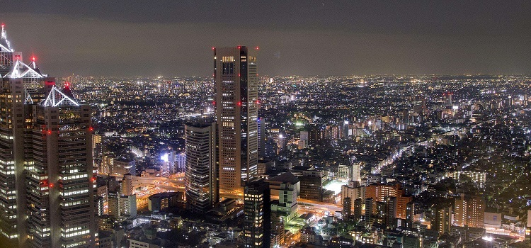
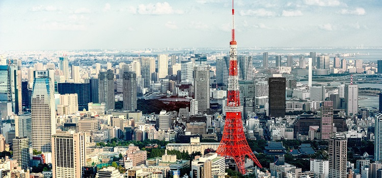

介紹
#地理位置及歷史#
東京（日文：東京，假名：とうきょう，英文：Tokyo），日本國行政區，位於日本本州島關東平原南端。狹義上廣泛使用的“東京”通常是指“東京都區部”（亦稱東京23區、東京特別區）地區，其與多摩地方、伊豆群島、小笠原群島等地區共同組成日本一級行政區——東京都。

圖：東京夜景
東京古稱江戶，是日本自德川幕府時代以來的主要都市之一，明治維新遷都江戶，改名東京，自此成為日本首都。後逐漸發展成為日本政治、經濟、文化、交通等眾多領域的樞紐中心，亦為世界經濟發展度與富裕程度最高的都市之一。
東京下轄23個特別區、27個市、5個町、8個村以及伊豆群島和小笠原群島，總面積2155平方千米，城區面積621平方公里，人口約1350萬（2015年） ，是世界上人口最多的城市之一。東京都市圈總人口達3700萬，是全球最大的都市區和都會區。

圖：東京市區
#宗教#
主要宗教：神道教、日本佛教。
多數日本人同時崇奉此二者為宗教信仰，日本人心理上並沒有特定的宗教信仰，但前二者之宗教儀式或活動已與日本人生活融為一體，如婚禮和葬禮。一些日本人由於日本歷史的原因，或是科學的發展，而反對宗教，認為是迷信；另有些人則對宗教持中立態度，一生中也信奉過多種宗教。
神道教是在日本本土所發展出來的宗教，祭神的場所是神社，神道教認為自然界萬物皆有神。也有奉祀先烈先賢、名人武士、諸侯大名、公家卿相甚至是幕府將軍與天皇者，如明治神宮、日光東照宮、靖國神社等。
日本佛教佛教於552年傳入日本，7世紀初，聖德太子興建法隆寺，致力推廣並普及佛教。
基督教1549年，基督教中的羅馬天主教傳教士進入日本，至17世紀初，教徒大約有75萬人。德川幕府（江戶幕府，從創始者德川家康1603年受封徵夷大將軍開始，直到1868年末任將軍德川慶喜還政予明治天皇為止）實行禁教政策，規定日本人必須要皈依佛教宗派，此刻日本人自認是佛教信徒，無論是實際上或是名義上。
19世紀後期，美軍強制日本幕府開放貿易與外交的黑船來航事件以後，傳教活動才再次興盛於日本，現在日本正式的基督教徒不超過總日本人口的1%。

圖：東京寺廟
#最佳出遊日期及特色#
作為都市旅行的目的地，東京一年四季皆適合前往。春季可以賞櫻、夏季周邊遊值得一看的花火大會、秋季賞楓、冬季可以前往東京參加聖誕節和跨年的活動。
3-5月：春季的特色自然是賞櫻。觀櫻時期會因當年氣候而有所浮動，花期通常只有一周。另外，此時的東京氣候溫和舒適，晴天率高，適合戶外活動。
圖：東京櫻花季
6-8月：東京的夏季較為炎熱，6月是漫長的梅雨季節，7月酷暑。不過，東京周邊的鎌倉、伊豆是絕佳的周邊避暑聖地。 7月底至8月初期間，東京會舉辦多場花火大會，8月則有一連串的動漫展會和盂蘭盆節。
圖：東京盂蘭盆節
9-11月：秋季的東京氣溫涼爽、偶爾有雨。一般來說，11月會進入紅葉季，會看到繽紛的楓葉景觀，近郊的高尾山是賞楓勝地。入秋後東京經常會舉辦各種美食節，應季的水果甜品正當季。
圖：東京高尾山楓葉
12-2月：冬季是日本一年中最大的打折季，所以是掃貨購物的最佳時機。而且，日本人非常看重聖誕節和元旦兩個節日，六本木、銀座、汐留夢幻般的聖誕燈飾，元旦期間可以前往寺廟神社進行參拜的，祈禱新的一年的好運氣。
圖：東京聖誕節燈市
時差
東京比北京時間快1小時，也就是北京為10:00時，東京為11:00。
公眾假期及節慶
#偶人節 (“雛祭”) #
時間：3月3日
偶人節一年一度的為年輕女孩乞求幸福和健康成長的日子。在這個日子，家家戶戶擺放著穿著傳統宮廷裝束的玩具娃娃和桃花，還有供奉一種鑽石形狀的米餅和乾米糰。玩偶節來源於古代的關於儀式滌罪的信念。
人們相信，人類的罪行和污穢可以通過在河邊的淨化儀式中沖洗乾淨。後來，人們在這些儀式上使用紙做的玩偶；在江戶時期之後，這些玩偶被設計成現在的玩具的樣子。
東京都中央區日本橋堀留町橋堀留町的三光稻荷神社在每年2月下旬至3月3日舉行偶人節。從3月3日的大約10天前開始，在神社展示7層偶人，在每年3月3日左右向小孩贈送雛霰點心。
圖：偶人節玩具
#兒童節#
時間：5月5日
傳統上稱作男孩節。是特別為男孩設立的節日，用意在祈禱健康成長和將來事業成功。插鯉魚旗、武士服裝的玩偶、吃粽子、柏餅等習俗在日本非常流行。
在2017年5月5日，高333公尺的東京鐵塔舉辦掛333尾鯉魚旗的活動，許多家長帶小孩到達現場感受節慶氣氛。除了鯉魚旗，還有一支大秋刀魚旗隨風搖曳，相當顯眼。
圖：東京鐵塔正舉辦掛333尾鯉魚旗的活動
#神田祭#
時間：距5月15日最近的周六和周日
東京的神田神社祭會從江戶時代開始即為江戶兩大祭會之一。以每年的5月1日為主舉行盛大的祭會。此祭會期間，是以太鼓嘉年華會及抬神轎，在街道上緩步前進的方式將氣氛抬升到個高潮。主要的大祭會則為隔年舉行。
圖：神田祭時寺廟外場景
#淺草三社祭#
時間：5月第三週的周五、週六以及週日
保留了傳統文化的街區舉辦的東京最熱門的神轎節慶活動，在淺草神社舉辦。在神社可以觀賞“編木（Binzasara）舞”。舞者身著華麗衣裝，手持名為“Binzasara”的樂器翩翩起舞，祈求豐收和子孫後代的繁榮。 “編木”演奏像手風琴，一開一合，非常有可觀性。
圖：淺草神社的神轎節慶
#山王祭#
時間：6月10日-16日
東京都千代田區的日枝神社的祭禮，正式名稱是“日枝神社大祭”，是江戶時代最高級別的“天下祭”之一。山因祭會是隔年舉行的關係，當輪為主祭會年時，還會與其他地區，如大田樂、民族舞蹈大會等相關的活動一起舉行，熱鬧非凡。
圖：山王祭所用神具
#盂蘭盆節#
時間：格里歷7月13日-16日或8月13日-16日
一年一度的迎接和安慰祖先亡靈的日子，日本人對這個節日的重視程度僅次於元旦。據說，祖先的亡靈在這個日子來到家裡。
按照傳統，在陰曆7月的第17日紀念。 13日那天人們點火歡迎祖先的亡靈。到16日，人們點燃送別火，送祖先的亡靈回去。節日期間，公司商店都會放假，因為在異地工作的人都會趕回家與家人團聚，那時候的交通很是繁忙。
中央區築地的築地本願寺納涼盂蘭盆舞大會，每年在7月下旬至8月上旬之間舉辦為期4天的活動。
歷年來，不僅當地居民，從遠方及海外來訪的遊客也蜂擁而至。現場會有太鼓演奏“盂蘭盆舞組曲”，人們可隨著“築地音頭”等多種盂蘭盆舞曲目，圍繞築地本願寺佔地內設置的高台歡快起舞。還有可隨意化裝後參加盂蘭盆舞行列的“化裝舞會”，以及雄壯威武的“大江戶助六太鼓”等活動。此外，由築地場外市場及附近餐飲店推出的各式攤點也是一大欣喜。您可飽嚐鮮美可口的築地美食，暢享盂蘭盆舞樂趣。
圖：盂蘭盆節
#光之盛典#
時間：11月底-12月底
東京光之盛典每年都吸引到各地旅客丶本地居民前住欣賞！
在2016年的活動大幅改裝升級。東武晴空塔線的竹之塚站前出現LED彩色聖誕樹，從竹之塚站到主會場元渕江公園沿途的櫸木林蔭大道，也以22萬顆香檳金色燈飾點綴，長度堪稱東京都內屈指可數。
而主會場則以繽紛鮮豔的光彩，呈現「足立的四季」。此外，現場還有8棵以日本罕見丶高度超過20公尺的天然巨木裝飾而成的燈光聖誕樹，將每20分鐘一次搭配春季樂曲，上演燈光秀。
詳情請瀏覽以下網頁：
https://www.gotokyo.org
#王子狐狸遊行#
時間：12月31日-來年1月1日
傳說在比江戶時代更久遠以前，每到除夕夜，全關東地區的狐狸們都會聚集起來，在王子附近的大朴樹下整裝後，前往關東稻荷總司的王子稻荷神社參拜。歌川廣重曾將其情景描繪在浮世繪「王子朴樹下整裝，除夕狐火夜通明」中。
王子的人們從1993年的除夕開始重現這張浮世繪上的景象，在每年的除夕夜舉辦參拜活動「王子狐狸遊行」，以表達「對過去一年的感謝及對未來一年的祈福」，期望將傳統文化應用於新的地方發展計畫中。
藉由此活動，人們將地方歷史與文化傳承給下一代，給予下一代夢想與驕傲，祈求孩子們的健康成長與幸福，同時以狐火燈籠代表通往未來的生命之燈與希望之燈，由全體參加者列隊遊行進行新年參拜，共同慶祝新一年的到來。
詳情請瀏覽以下網頁：
https://www.gotokyo.org/
圖：王子狐狸遊行
有關日本的公眾假期資訊，歡迎瀏覽以下的網址：
http://holidays-calendar.net/